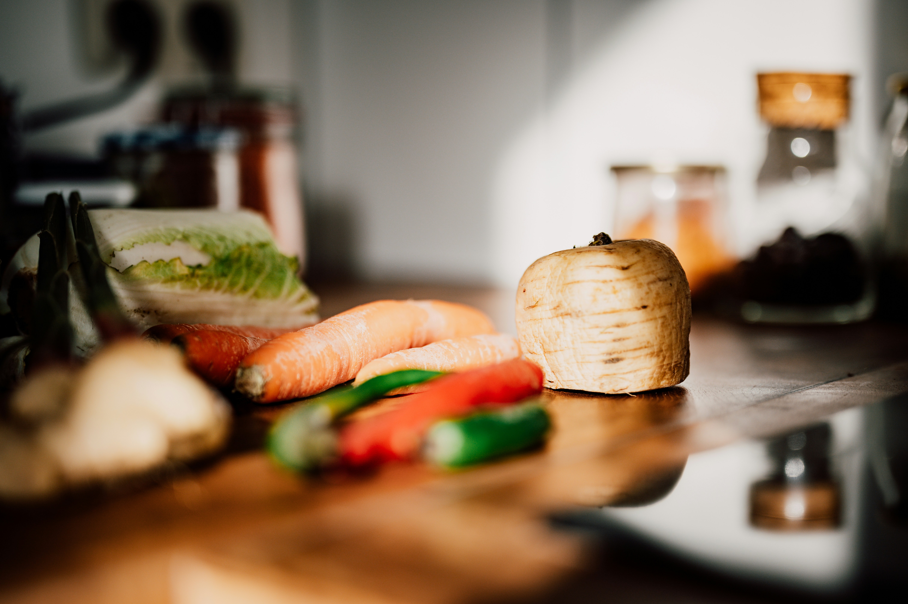

About Cookies
Cookies is a digital recipe book designed for food lovers and home cooks. Our mission is to make discovering, sharing, and following recipes simple and enjoyable. Whether you are looking for breakfast inspiration, a quick lunch, or a sweet dessert, Cookies brings a curated collection of recipes to your fingertips.
This website is a static, front-end only project focused on beautiful design, easy navigation, and a delightful cooking experience. No logins, no uploads—just pure recipe discovery!
About Me
Hi, I'm the creator of Cookies. I'm passionate about cooking and making delicious food accessible to everyone. I created Cookies to share my love for culinary arts and to provide a simple, intuitive platform for home cooks to explore new recipes and enjoy their time in the kitchen.
My goal is to inspire you to try new dishes, experiment with flavors, and make cooking a fun and rewarding experience. Happy cooking!
